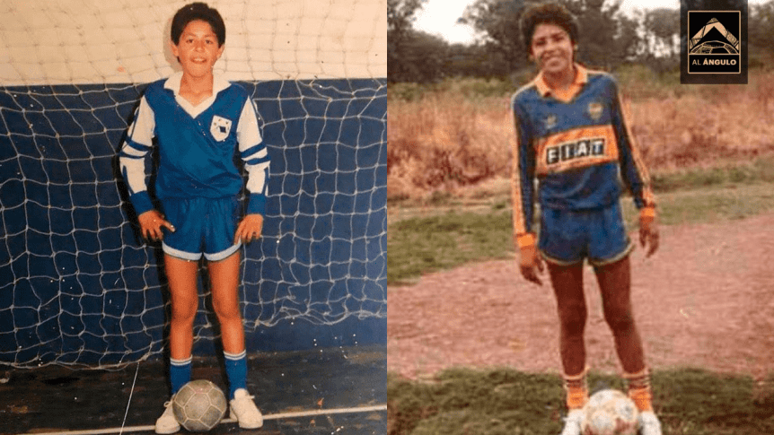

👈ROMAN
JUVENIL👉

Se formó en las divisiones juveniles de Argentinos Juniors, para más tarde debutar en Boca Juniors en 1996. En el conjunto de la rivera, pasó seis temporadas donde transitó una de las eras más gloriosas del club, ganando tres títulos locales (Apertura 1998, Apertura 2000, Clausura 1999) y tres internacionales (Copas Libertadores 2000, 2001 y Copa Intercontinental 2000). Fue una importante figura entre todos esos campeonatos, potenciado principalmente por su entrenador y mentor Carlos Bianchi. En 2002, fue traspasado al Barcelona, donde tan solo permaneció una temporada por sus problemas con el entrenador del equipo en esa época, Louis van Gaal.10 Se marchó cedido al Villarreal, club de España donde consiguió sus mayores éxitos en Europa, alcanzando un histórico tercer puesto en la liga y las semifinales de la Champions League por primera vez en la historia del club.1112 En 2007, retornó a Boca y ganó su tercera Copa Libertadores de manera extraordinaria, siendo el goleador del equipo y el mejor jugador del torneo. En su tercer ciclo en el club, consiguió la Recopa Sudamericana 2008 y los torneos Apertura 2008 y Apertura 2011. Acabó yéndose en 2014, siendo el 6.º jugador con más partidos del club (388), el 7.º con más títulos (11) y su 11.º máximo goleador histórico, con 92 goles. Además es el jugador con más presencias en La Bombonera, con 206. Se retiró en Argentinos Juniors, donde alcanzó el ascenso a la Primera División.
A nivel internacional, fue parte del seleccionado juvenil sub-20 de Argentina, con el cual ganó el Sudamericano Sub-20 de 1997 y el Mundial Juvenil de 1997 disputado en Malasia. En 1997 debutó en la selección mayor, donde tan solo disputó el Mundial de Alemania 2006, quedando afuera en cuartos de final. Alcanzó la final de la Copa Confederaciones 2005 y la Copa América 2007, perdiendo ambas contra Brasil. En 2008, fue parte del equipo que ganó la medalla de oro en los Juegos Olímpicos de Pekín. En 2009 decidió retirarse de la selección, perdiendo la posibilidad de disputar el Mundial de Sudáfrica 2010.
Fue distinguido como el futbolista del año en Argentina en cuatro oportunidades (2000, 2001, 2008 y 2011) y como el futbolista del año en Sudamérica en 2001. Además, obtuvo el Premio Don Balón al mejor jugador extranjero de la Liga Española en la temporada 2004-05, y entre 2005 y 2007 fue incluido en la lista de nominados para las ternas de los premios Jugador Mundial de la FIFA y el Balón de Oro.1314 Riquelme fue parte del Equipo Ideal de América en seis oportunidades (1999, 2000, 2001, 2007, 2008 y 2011).